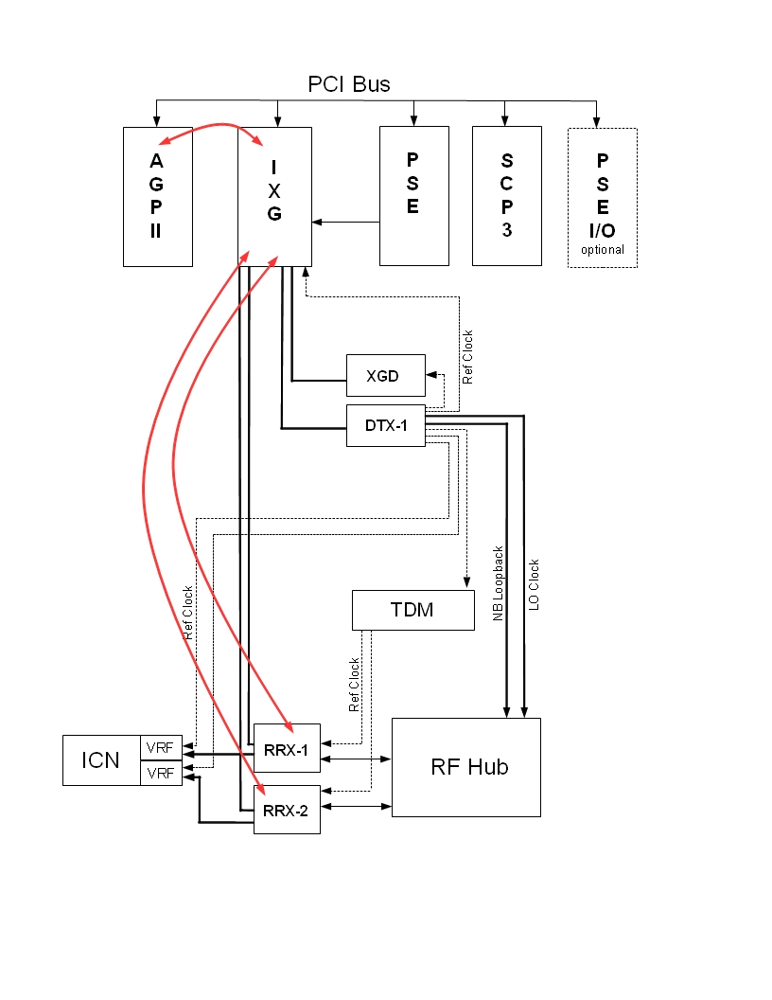
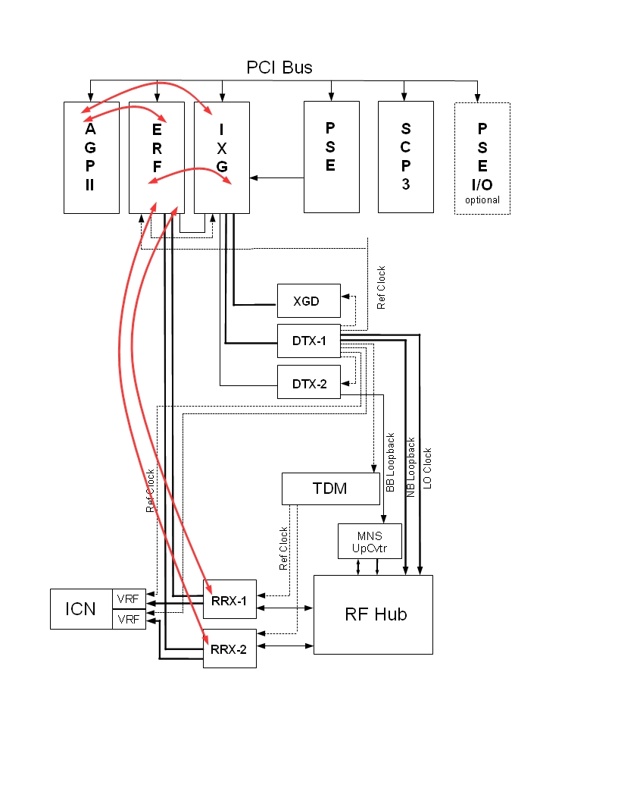

Operating Documentation
Direction 5670006, Rev# 1
Discovery MR750w GEM Service Methods
Module Version 11.0, Version Date 10/12/11
Operating Documentation |
Diagnostics >> System Function >> RF >> Receiver Diagnostics
Diagnostics >> Hardware Location >> Magnet Room >> Receiver Diagnostics
Illustration 1: Receiver Diagnostics

There are two (32 channel) RRX modules attached to the side of the magnet. The RRX Board Level Diagnostics test each RRX module installed and the dual fiber link between the RRX and the IXG. It also tests the circuitry internal to each RRX module. The test is run from the AGP. This diagnostic creates a log file in the directory /usr/g/service/log for each RRX tested. These log files contain the results of the RRX signal quality tests.
| NOTE: | The date in the log files show the current date and time of the test. For example, RRX-1_loopback_2008MAR13_01_45_19.log shows the module followed by the year, month, day, and then time of the test. |
Checks DC offset on A/D converters
Checks for over-range condition on ADC
Dual fiber link connectivity to the IXG board
Programmable registers and logic internal to the RRX
Analog and digital filters of the RRX (tested using signal generators internal to each RRX)
Ability of the RRX to collect sample data
| NOTE: | This diagnostic does not include the analog signal inputs from the RF Hub, the TNS related connections to the TDM, nor the fiber link between the RRX and the ICNs. |
No special requirements.
Illustration 2: RRX Board Level Diagnostic Data Path Flow - Standard Configuration

Illustration 3: RRX Board Level Diagnostic Data Path Flow - MNS Configuration

Select RRX Board Level Diagnostics from the Receiver Diagnostics screen.
Click [Run].
Ensure that the diagnostic passes by reviewing the Test Results table.
This diagnostic has either a passed or failed status. If the diagnostic has failed, please review the error log and corresponding extended error messages for subsequent actions.